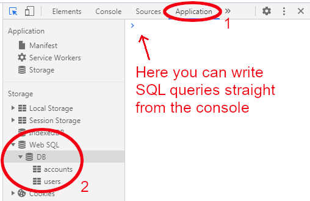

DB queries may take some time to execute, thus asynchronous interface is mostly used. DB wraps them into Promises, which allows concurrent multithread execution. Here we create two parallel threads, wait for both of them to finish by Promise.all and then produce the output. To use await, the function needs to be declared async, so it is run in thread separate from the main process: test is written in the console first, when the tables are not created yet! Make sure all the threads are finished before the user leaves the page (i.e. by clicking a link), otherwise the DB may be left in corrupted state.
To inspect the tables, check the Application tab in the browser.

Scripting languages do not enforce strict memory types and switch among them automatically, but it can not be automated allways. SQLite is written in C and the comparison is made on C level, strictly typed. When you don't declare column type (like CREATE TABLE users (name, age), it is used as BLOB type, data are stored in binary form. So when you call i.e. INSERT INTO users (name, age) VALUES ('John', 27), the 27 is stored as 00 00 00 1B (on 32bit MSB systems) and then call SELECT * FROM users WHERE age=? and replace the token with input field value, it is a string "27" stored as 20 25 00, so nothing is found on the request. But if you declared age as TEXT or INT type, you would find John.
TEXT types can use COLLATES (default is BINARY), which is a function used in comparison. On C level you can create your own, in Javascript you can use only the predefined, which is NOCASE (case insensitive comparison) and RTRIM (to strip spaces when loading various length strings from inapproprietely used CHAR type in other databases). Luckily, SQLite does not have CHAR type and the text is stored in UTF-8 (you can use CHAR, VARCHAR, MEDIUMTEXT etc. in column declaration, but it is always TEXT type in SQLite)
Similar problem exists in numeric realm: floats and integers have different representation in memory. But if you declared age as REAL and tried to select the row by using 27 integer literal, you would still find John, because the integer would be converted to REAL data type. This is called type affinity, no such type conversion happens in BLOB type. For compatibility reasons, you can also declare FLOAT or DOUBLE type, which is in SQLite just alias for REAL. On the other hand, you can declare NUMERIC type which prefers INT, but can store also REAL (useful when you don't use comparison on this column, just mathematical operations and you want to allow decimal numbers occasionally).
DATE type is a bit confusing, as it uses NUMERIC type, which can store INT (number of seconds since 1.1.1970) or REAL (number of days since 24.11.4714 B.C.). SQLite date and time functions can handle both and TEXT type, which stores the date in ISO8601 format. To clearly convert dates and times from other DB engines, it is less confusing to use INT for Unix timestams and TEXT for ISO8601 strings.